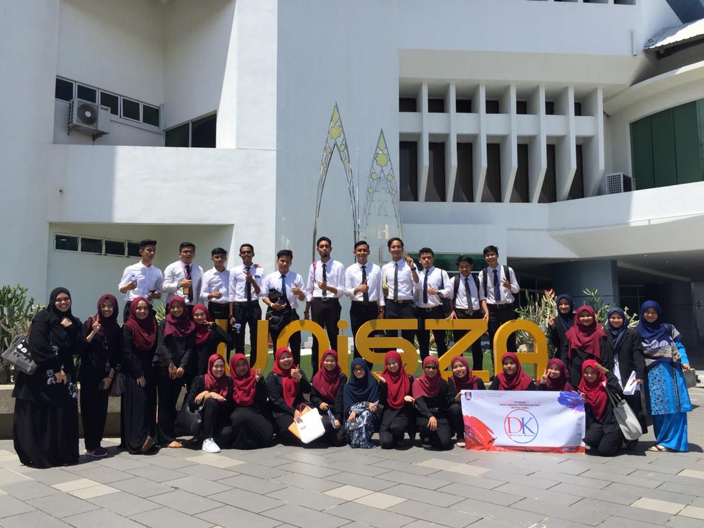
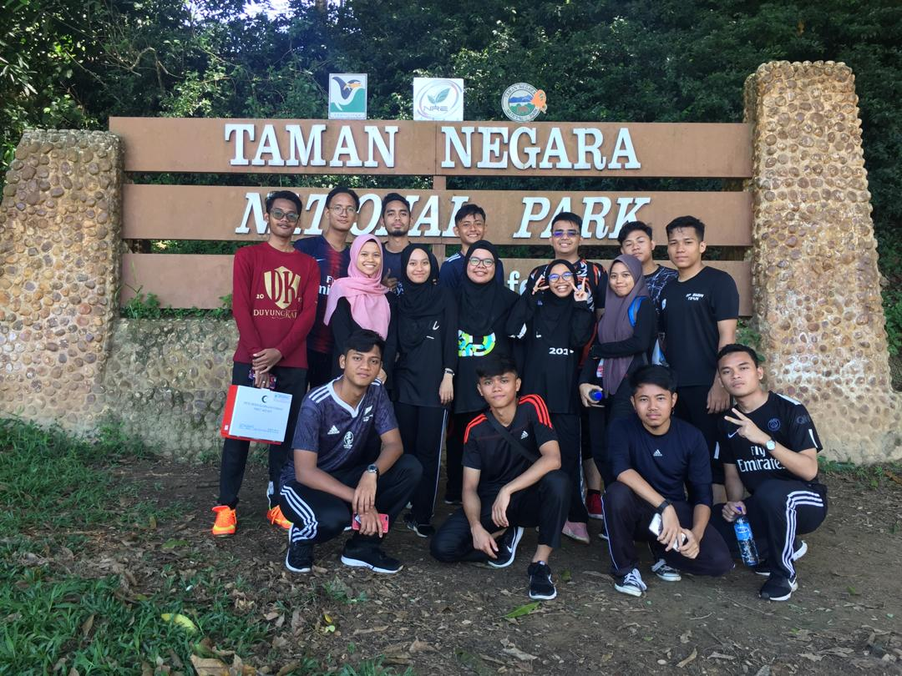
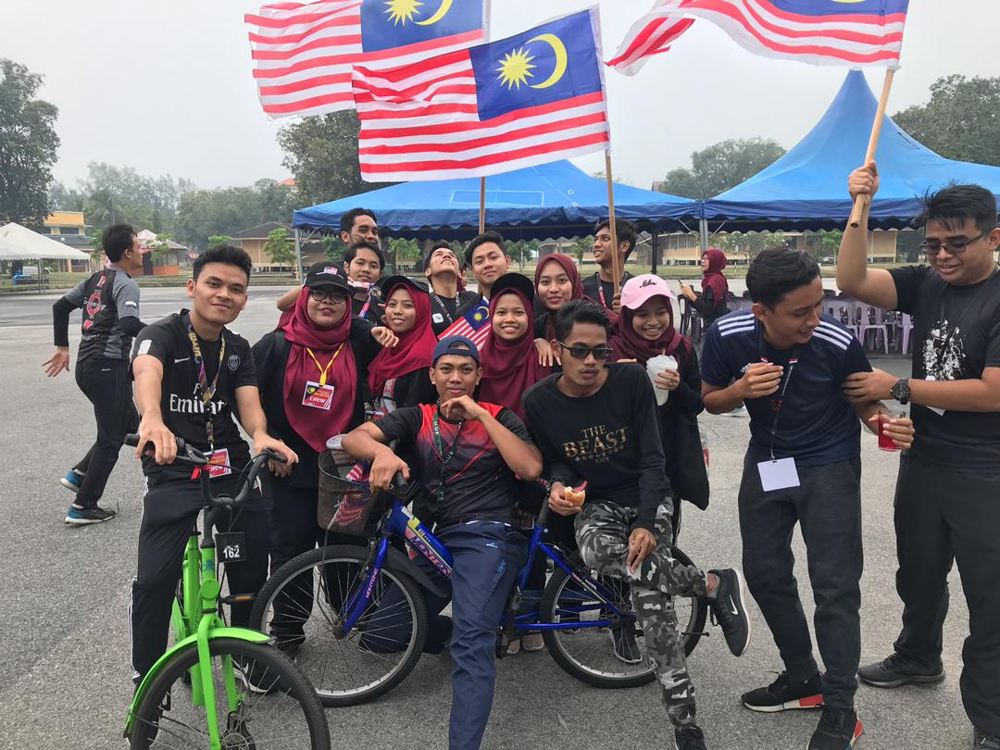

There was an experience that I will never forget when I was a diploma student at UiTM Dungun, Terengganu. In semester one, I went to interview for the College Representative Committee and I was selected to be a member of the club. Subsequently in the second semester to the fifth semester, I held the position of secretary of the College Representative Committee for Duyung Kapas's college. This experience was very valuable to me as I learned more about the club secretary and using my existing skills.
There are some events that have been handled by me as a secretary:

The first event was the College Representative Committee benchmarking with Universiti Sultan Zainal Abidin (UniSZA). The purpose of this benchmarking is for the improvement of all members of the club. So, my experience as a secretary for this event need to provide various letters to obtain approval for the event. Thankfully, everything went well.

Besides that, the most memorable experience was that I was secretary of the 'Konvoi Kayuhan Berbasikal Hari Malaysia' event. This event was huge for me as it involved the university of UiTM Dungun, Terengganu. There are many letters I need applications such as event approvals, Dungun police's approvals, Unit Kesihatan approvals and more. So my challenge as secretary for the event was challenging but 'Alhamdulillah' I was able to do it well.

2020964045
Bachelor in Office Systems Management (Hons)
Faculty of Business Management
UiTM Machang, Kelantan
Malaysia